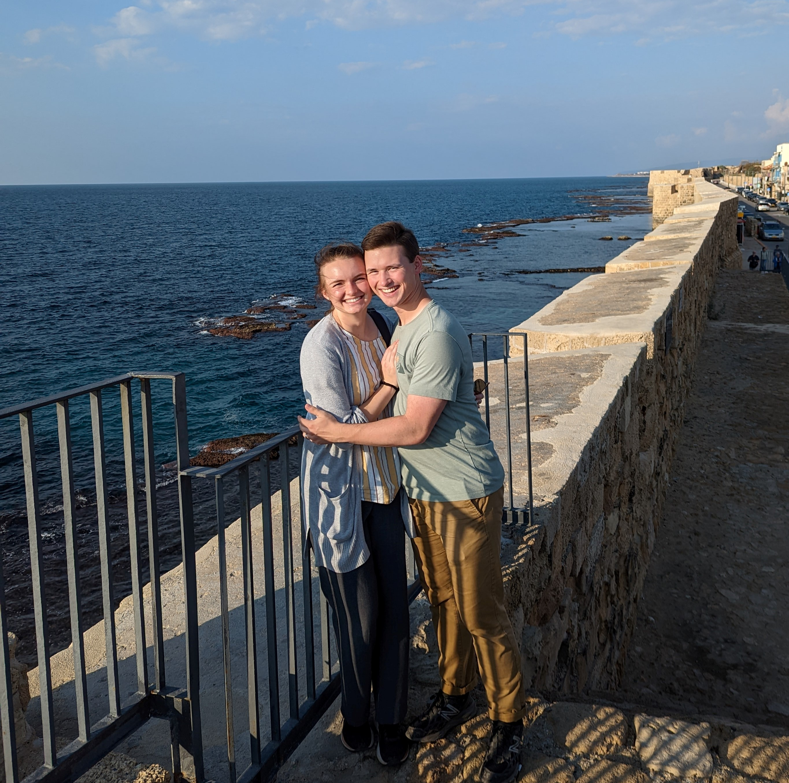

This area has amazing and complex history, as clearly evident in the next locations on our tour. We went to several old ports that have surviving roman and crusader fortresses and palaces. Akko, or Acre, has fully intact rooms, hallways, dungeons, and stables from the crusader times, as well as a wall that held back napoleon. We also visited a Turkish-style bathhouse that was there after the crusaders were driven out by the Arabs.
 My husband and I standing by the sea.Next, we saw the ruins of what was once the grand Caesarea, an expansive Roman city and port built by Herod for the emperor. It was easy to imagine a big castle right on the sea, right next to an expansive and busy hippodrome.
The view from Caesarea.Finally, we made it to the big city--Tel Aviv, also known as Jaffa. We did a scavenger hunt there, and saw all of the amazing architecture brought over by European Jews. My favorite part was a tiny museum that we happened to visit from the list, the house of Joseph Bau.
The studio of Joseph Bau, including his homemade animation machine and "movie theater".The Bau sisters, Joseph's daughters, were ecstatic that we were visiting their tiny, struggling museum, which the government won't officially recognize as a museum because of its size. However, as a graphic designer, I was amazed at the impact that one man made with his design work. He survived the Holocaust, yet incorporated humor and/or cleverness into his work that made a statement and made a difference.
The lovely ladies who gave us the tour are also the daughters of Joseph Bau.